COWMATA 3.5.1 完整图文教程
本手册覆盖当前版完整操作流程。3.5.1 新增页为本次 Windows 实际界面截图，路径为演示示例；其余通用功能沿用历史真实界面截图，已复核本版说明。演示标签不作研究真值。
01 从混合大目录中只补整理视频
- 选择“九轴已归类，仅补整理视频”，牧场目录选已整理九轴和标签的“扬大_高邮牧场”。
- 点“添加混合大目录（递归筛选）”，选择“2026.8扬州大学高邮牧场测试”；只筛选视频，跳过九轴、标签和其他文件。
- 选择类别与孕期，先预览再归档。按视频实际开始时间命名，原有九轴和标签保留。
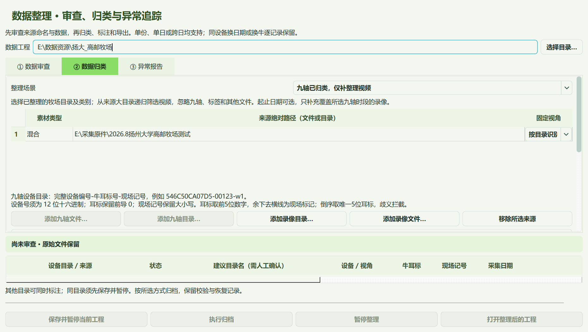
能识别视角01至视角08目录；未知视角会列为待核项，添加相应摄像头子目录并指定视角后重新预览。
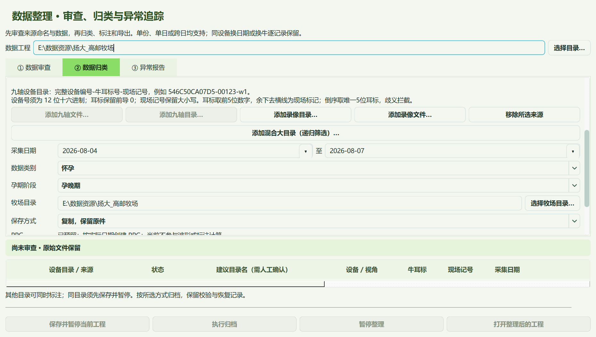
02 日期日历与牧场目录选择
- 点击日期右侧箭头，在日历中选择起始日期和结束日期；清空日期则不限日期。
- 仅补视频时，范围包含结束日，并保留前一晚开始、覆盖所选九轴时段的录像。
- 牧场目录用“选择牧场目录”浏览选择。怀孕类别再选择孕早期、孕中期或孕晚期。
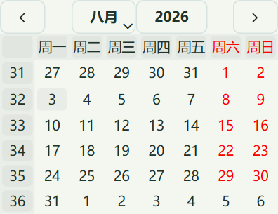
日期只筛选或核对实际采集时间，不会改写原始时间戳。窗口较小时可滚动归类表单。
03 快速迁移、暂停与恢复
- “复制”保留来源；“同盘移动，跨盘复制”在同一卷直接迁移目录项，跨卷复制后保留来源。
- 复制根据存储设备选择并行读写或大缓冲批量处理。目标完整校验后才成为正式文件。
- 可暂停整理，再在“异常报告”继续上次任务；大文件已完成部分先校验再续传，不从零重新复制。
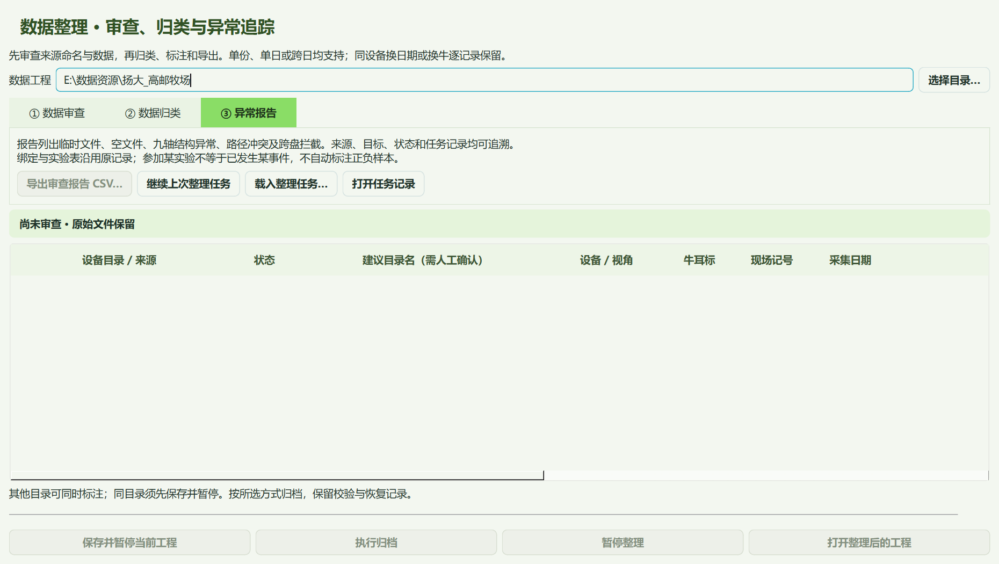
速度由磁盘、缓存、文件数和校验成本共同决定。未知、冲突及非视频原件保留；不自动清空来源大目录。
04 更新失败也能进入软件
- 启动时检查更新；网络中断、SSL 错误或暂不升级，可点“进入软件（稍后更新）”。
- 联网恢复后可在“帮助 → 关于 → 版本与更新”重试；无需按旧版本逐个安装。
- 下载或安装准备失败时不会执行不完整安装包。已经打开的工程可继续离线标注。
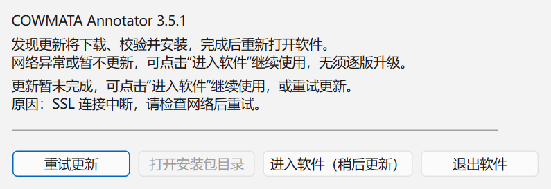
本版不需要激活码、核验码或登录。三个 GitHub 仓库按本次决定继续公开。
05 人工核验：保存读数后浏览
- 读取实际画面，再填写其日期时间并点击“确认当前读数”；不要把请求位置当成实际帧。
- 保存一个读数即可粗定位浏览。需要确认区间真值时，在较远位置再核对第二个读数。
- 保存后播放器立即重新定位，后台索引不会覆盖刚保存的人工结果。

单点外推和双点范围外仍是待核区间，可浏览但不能自动作为已确认视频证据。
06 同一路视角与正确文件时长
- 同一路只显示稳定视角名，不再因分辨率或时间戳角落而重复。
- 画面下方显示文件内位置/完整文件时长，不是已核验片段的长度。
- 通用播放器误报时长时，可在数据整理菜单另存标准 MP4 副本，原片不变。

标准 MP4 功能仅导出视频画面，音频和私有包保留在原文件。每份按真实流内时间和帧数核对，不预设一小时。
07 按时间排查，校准不移动旧标签
- 打开标注列表，视频草稿和九轴标签统一按开始时间排序，选中项保持不变。
- 手动对齐后，已有标签在九轴上的起止位置固定；录像对应关系更新。
- 受影响标签标为待复核，回看后更新证据；误操作可撤销。

原标注与同步修订历史保留。界面上的绝对时间随校准变化不代表九轴起止被移动。
08 站立、躺卧、行走互斥
- 三种状态的起点不得放在任何已存在的站立、躺卧、行走区间内；边界可相接。
- 结束点或整段区间发生冲突时，本次结束不生效；重新定位到合法位置后再结束。
- 历史遗留的无效起点，可点“取消本次动作”后重标。点事件仍可与状态区间同时记录。

编辑起止、拖动标签或选区标注也检查重叠；已有标签保留，操作可撤销。
09 怀孕资料明确选择孕期
- 数据整理 → 数据归类，选择怀孕后再选择孕早期、孕中期或孕晚期。
- 产犊保持一个类别；PPG 目录和字段自动预留。日期按真实采集时间生成。
- 旧标签整理可直接点击“旧标签与算法数据集”，进入专用迁移窗口。

不能根据行为标签或产犊日期自动推断已有资料的孕期。未确认的旧资料保留原位置。
10 先审查旧标签及来源
- 逐行添加旧 CSV/BORIS 标签和原始九轴来源，填写牧场或资源目录及本批类别。
- 点击“审查并预览旧标签”，核对已匹配事件、未匹配条目和牛号冲突。
- 有冲突的原行保留待核，不凭目录或别的牛的数据补造身份与时间。

图中采用隔离演示数据测试实际后台任务；不会混入科研数据集。
11 迁移为可继续标注的工程
- 预览确认后执行迁移，完成时会列出保留事件与新版标注文件数量。
- 标注工程/annotations 保存可编辑成果；导出标注目录保存独立单文件。
- 点击“打开结果目录”，再通过主窗口打开该类别工程或历史标注。

原始标签、原始九轴与来源哈希保留。修改过的人工成果不能被旧标签覆盖。
12 从新旧标注生成算法数据集
- Ctrl+S 保存，然后逐行选择类别工程；新数据集目录必须尚不存在。
- 可选历史事件识别数据集。只有明确沿用旧方案时，才勾选代理负样本仅用于训练。
- 点击生成；后台完成后按各算法 readiness.json 核对输入条件。

当前标注优先于旧导出快照。同一牛共享划分，未标注不自动等于负例。
13 没有九轴也保留真实产犊时刻
- 缺少唯一九轴对应的产犊时刻，使用绝对时间单文件保留并可独立回看。
- 未知时间仅保留原行，不创建虚假的事件、九轴波形或源文件。
- 完全娩出 T0、露蹄及人工干预分别保留；产犊目录不按引产方式嵌套分类。

此页为本次真实标注的只读回看；无匹配视频或九轴时会如实提示。
14 启动便携版与空格播放
- 完整解压便携包，双击 COWMATA.exe；启动检查后打开工程。
- 选择倍速或行为后，无须再点九轴，直接按空格播放或暂停。
- 牛号、日期、备注等输入框仍可正常输入；下拉列表展开时先完成选择。

请保留整个便携目录及其依赖。截图为生成的演示视频与波形。
15 开始与结束不能是同一时刻
- 在起点暂停并点击开始；播放、逐帧或跳转到结束画面，再点击结束。
- 同一时刻重复点击会提示，起点保留，不生成零时长区间。
- 点事件只记录一个时刻，无须第二次结束。

遇到同帧提示后直接继续播放，无须重新开始动作。
16 选中最新标签并直接拖动
- 新动作结束后自动选中；拖动轨道两端改起止，中间整体平移。
- 单击列表或轨道选中后，也可拖动波形上的左右手柄。
- 调整后回看两端、补充证据并重新确认；Ctrl+Z 可撤销。

只有实际改动才会使已确认标签回到待复核；单击选择不改变确认状态。
17 选择对应人工标签：下一步怎么做
- 双击算法结果定位；没有结果也可自行浏览视频。
- 点击选择对应人工标签，下方行为类型和动作按钮随之更新。
- 观察视频并记录开始、结束；核对后确认。该按钮不会自动生成标签。

算法结果提供定位线索；人工动作区间由用户独立观察确定。
18 按批次类别整理新数据
- 添加九轴与录像来源，选择视角01～08、牧场和本批类别。
- 日期留空自动识别，PPG 自动预留；先预览，再执行复制或同盘移动。
- 视频名只留起始秒；支持跨日加载，异常和同秒冲突在报告中核对。
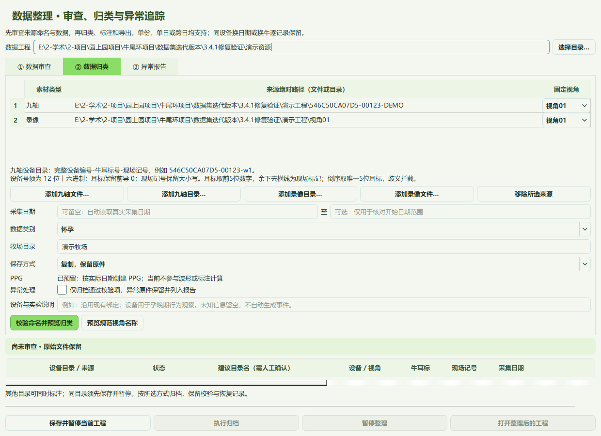
设备目录格式为设备编号-五位耳标-现场标记；有歧义时先核对。
19 保存、导出与再检查
- Ctrl+S 保存工程；文件菜单导出当前成果，保存一个 .标注.json。
- 历史回看可检查导出成果；修改时回到原工程。
- 交付时带上证据目录，分别备份原始数据与标注工程。

演示截图中仍未确认的草稿不会自动变为已核验真值。
20 先准备来源，再整理数据
- 打开“数据整理 → 数据归类”，通过按钮选择所属牧场的完整目录。
- 混合整理可添加九轴和录像；仅整理视频可直接递归扫描来源大目录。
- 确认类别和起止日期，先预览，再执行归档。小尺寸窗口可滚动表单。
文件夹可嵌套；新归类会展开到日期目录。视角名称与摄像机品牌无关。
21 九轴目录必须写对三段
- 目录格式：完整设备编号-牛耳标号-现场记号，例如 546C50CA07D5-00123-w1。
- 设备号为12位十六进制；耳标只用数字并保留前导0；现场记号限英文字母/数字，保留大小写。
- 看到“命名待规范”先核对建议，人工改好来源目录后重选。工具不会猜牛号或自动改名。

同一设备换日期、换牛可以复用；每条记录分别保留身份。已有工程不强制迁移目录。
22 选择本批数据类别
- 按现场已确认信息选择：正常健康、发情、孕早期、孕中期、孕晚期、产犊或疫病。
- 不同类别分批整理；不会根据日期、波形或行为自动推断孕期。
- 类别随标签保存与导出；各类别下都可自由标起立、卧倒、抬尾、甩尾、排尿、排便等行为。
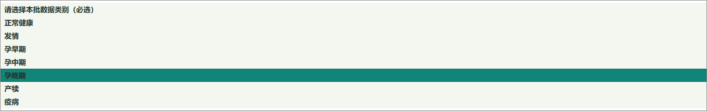
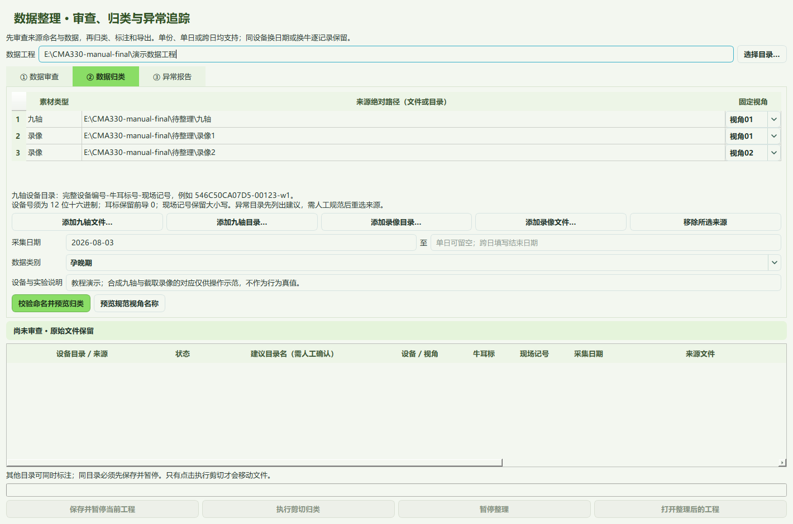
“怀孕数据类别”是人工采集背景，不等于算法已识别怀孕。
23 先审查，再处理异常
- 切到“① 数据审查”，点击“开始数据审查”。
- 检查可归类、命名待规范、待核对和临时文件数量。
- 需要清理时先点“预览隔离清理”；核对清单后再执行。

有效九轴命名不规范也会保留；已有标签和异常原件不能按废料直接清除。
24 异常报告与任务记录
- 在“③ 异常报告”查看来源、状态和修改建议；横向滚动可看完整列。
- 导出审查报告 CSV，交给采集人员逐项核对。
- 暂停或意外中断后，用“继续上次整理任务”或“载入整理任务”恢复。

临时与空文件移到工程外隔离区，任务记录保留去向；不要自行删除任务记录。
25 核对归类预览
- 返回“② 数据归类”，点“校验命名并预览归类”。
- 逐行检查设备、牛耳标、现场记号、实际采集日期和目标路径。
- 确认无误后点“执行剪切归类”，在确认框中继续。
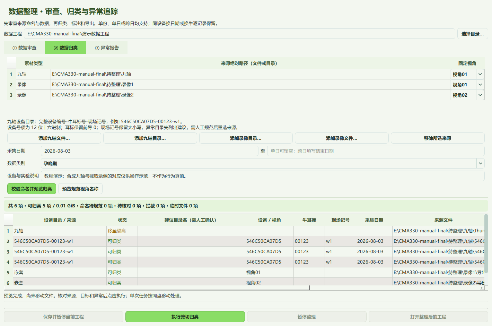
同盘移动不复制整段录像；跨盘任务会拦截，避免不知情地复制大批素材。
26 等整理完成，再打开标注
- 看到“整理完成”与完整进度后，点击“打开整理后的工程”。
- 整理的目标或来源正被标注占用时，先保存并暂停该工程，再执行整理。
- 整理其他目录时可同时标注；“暂停整理”会留下可续接的任务。
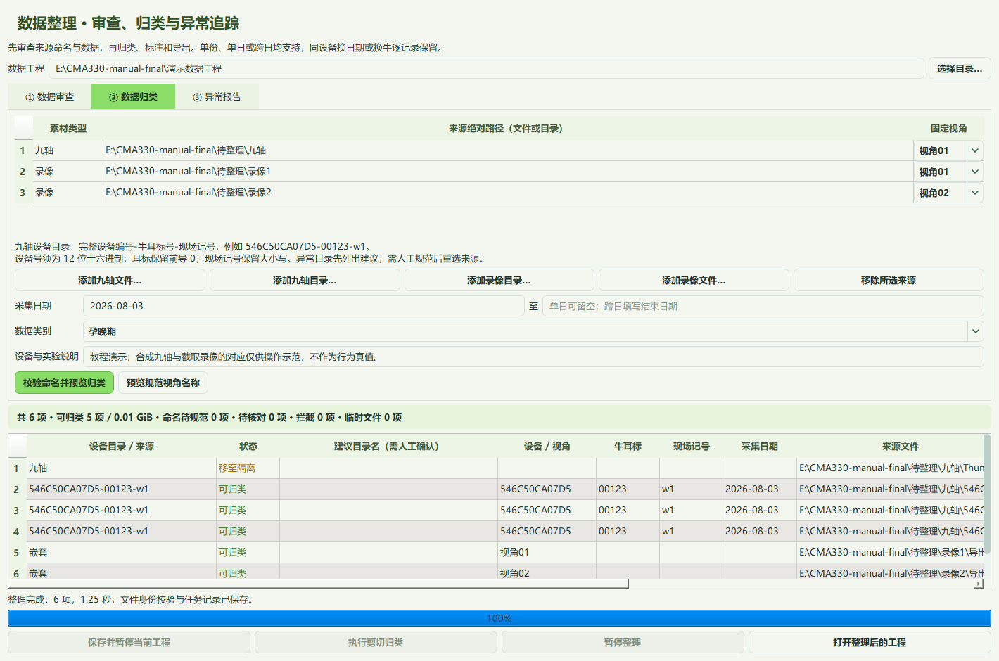
整理成功会保留分类清单、索引和任务记录；这些是工程资料，不是废料。
27 认识标注工作台
- 左侧选设备与九轴记录，核对牛耳标、现场记号和类别。
- 当前九轴和匹配录像就绪后会提示“加载成功”；其余记录按需读取。
- 勾选视角开始观察；顶部可切换“观察、多视角、波形”。

本教程使用真实牛舍录像短片和合成九轴，演示绑定与标签仅用于操作说明，不作研究真值。
28 待确认是什么意思，下一步怎么做
- 点“索引核验”，悬停状态或开始时间，查看原因与下一步。
- “待确认”是录像时间未确认，不等于损坏；先选择九轴，或选录像重建索引。
- 状态变为可用／待复核后，点“核验所选视频时间 / 框选 ROI”，核对画面时间。


后台抽查录像时间不代表已匹配当前牛；时间匹配后仍需核对牛身份。本页为隔离状态示例。
29 加载记录与检索工具
- 状态栏显示不全时，点右下“加载记录…”查看并复制完整路径、进度与提示。
- 在“工具 → 录像索引”可扩大当前检索、启动完整索引、暂停检索或刷新素材。
- 素材改动后再刷新；大批录像的内容核验和完整索引需等待后台完成。


同一时间范围不会因保存或位置刷新从头重识别；难读画面会保留待复核，继续检查其他录像。
30 时间读错时，核验画面读数
- 在素材索引里选中录像，点“核验所选视频时间 / 框选 ROI”。
- 读取画面，框选日期时间区域，识别后人工核对日期与时分秒。
- 至少确认两个相隔较远的位置，再保存；单个读数只供粗定位。

文件名和编号帮助检索，不作为录像时间真值。
31 单路播放、倍速与快定位
- 只勾选一个视角，或放大主视角；视频下方有独立播放进度条。
- 用1×、2×、4×播放观察；拖动进度条或输入日期时间后点“跳转”。
- 细看动作时暂停，用前后帧按钮定位；等实际画面到位后再标。

暂停首帧显示后会后台准备播放；首次完成后复用。异常音轨只在缓存中跳过，原片保留。
32 多视角交叉核对
- 左侧勾选所需视角，最多8路；拖动列表可调整顺序。
- 顶部点“多视角”看网格；点击画面控件可设主视角或放大。
- 暂停后核对各路同一参考时刻，避免把遮挡或未就绪的画面当证据。

“多路全速”解码负担更高；切换视角不会自动重建九轴同步关系。
33 波形与时间戳
- 点“波形”放大九轴，视频变为画中画；可拖动调整位置。
- 九轴横轴和时间输入使用日期时间，便于与视频时间戳查找。
- 在波形拖选区间供候选或片段导出；按F恢复整份九轴视图。

加速度、角速度和磁场用于辅助观察；波形变化本身不等于已发生某行为。
34 人工确认九轴与视频同步
- 找到同一个明确动作：把九轴光标和暂停视频分别定位到对应时刻，点“对齐”。
- 在较远的另一个位置再核对并对齐；勾选“同步跟随”一起移动。
- “工具 → 时间同步 → 九轴校准”可检查对应点；相机有时钟偏差时单独校准相机。

校准表使用九轴内部秒数表示对应点；修改同步后，已有真值需要重新复核。
35 先记录动作，再确认真值
- 选择行为，点击“开始…”记录起点，再点“结束…”记录终点；同一数字键也可操作。
- 正在记录的动作名称、起点和结束键始终显示；误操作可点“取消本次动作…”并确认。
- 打开标注列表查看视频草稿。草稿需调整边界、回看证据并确认，才成为真值。

模型候选与视频草稿均需人工复核；未观看或未确认的数据不能当成负样本。
36 在九轴上分别微调动作两端
- 闭合动作区间自动显示淡色背景；在标注列表选中草稿，点“九轴起止微调”。
- 拖动波形左、右边界；“编辑起止”可分别 ±0.1 秒调整，或直接输入时间戳。
- 回看调整后的起点、终点，补充画面证据并确认真值，最后保存。


虚线边界为待确认草稿，实线为已确认标签；颜色只帮助看范围，不自动确认为真值。
37 留存每个视角的证据图
- 确认真值后打开证据窗口，选择动作内最有代表性的时刻。
- 点“提取 / 更新图片”，逐一检查目标牛、遮挡和缺失视角。
- 勾选已核对，点“保存证据图”；导出成果时证据会一并带走。

图片从原录像提取；留存图片不替代整段录像，也不允许凭旧图确认新的动作。
38 保存进度，随时继续
- 未做完可直接切换记录，工具自动保存标签和位置；回来会恢复进度。
- 整份检查完后点“完成本份…”：保存并完成，或选择暂存退出。
- 关闭软件会询问保存；完成状态由你确认，未完成记录继续保留。


左侧颜色区分正在标注、未完成、未开始和已完成。完成整份不代表候选已全部确认为真值。
39 标错了可以修改
- 重新打开原工程，在标注列表选中一条，点击“编辑起止”。
- 修改标签、起止边界或备注；也可删除，或用Ctrl+Z撤销、Ctrl+Y重做。
- 修改后重新回看证据并确认，最后保存；已完成记录可重新标为进行中。

完整成果用于交换；日常继续编辑请打开原标注工程，不要在只读历史窗口中改标签。
40 复核后导出成果
- “文件 → 导出 → 完整成果”保存当前整份标注 JSON，便于交换和历史回看。
- 先选九轴区间，再用“所选片段”导出该段数据与标签。
- “训练数据”导出已确认事件、逐样本标签、BORIS、元数据和完整人工成果。


移动或发送成果时，把同级“证据”文件夹一起带走；类别、牛号与设备记录身份随成果保留。
41 历史回看与离线证据
- “文件 → 历史回看”打开导出的标注 JSON，选择标签定位查看。
- 有原录像时重新连接数据工程；录像不在本机时切到“留存证据图”。
- 若已归档录像，可连接并核验归档来源，再继续回看完整动作。

历史窗口只读，不覆盖当前标注；原片缺失与仅有证据图会明确提示。
42 多人标注与回传
- “工具 → 多人协作 → 回传设置”选择专用回传文件夹。
- 将整份标注 JSON 和配套证据放入回传目录，可按人员设一层子目录。
- 按提醒核对接收；只有明确完成、来源与证据核验通过且无冲突的整份成果可自动接收。

冲突保留双方版本，不覆盖已有人工成果；片段成果不能冒充整份完成。
43 行为算法：独立检查
- 从“行为识别”选择行为，选单个视角和可用算法版本。
- 点“运行算法”，双击结果定位九轴与录像，人工判断是否符合动作。
- “选择对应人工标签”只切换标签类型；需要标注时仍要人工划定动作。

算法结果不自动写入人工标签；没有接入的行为会显示待接入。
44 候选预测：逐条复核
- “工具 → 事件候选预测”选择版本和模型，扫描当前完整九轴。
- 选中候选定位录像；可标为暂无法判断，或排除该候选。
- 需要保留时，在九轴选好实际动作区间后建立视频草稿，再走人工确认流程。

分数不是概率，空结果不是负样本；演示九轴上的运行结果不代表模型实际准确率。
45 健康与繁殖的功能边界
- “健康与繁殖”中的发情、产犊、怀孕、疫病用于查看对应功能入口。
- 显示“算法待接入”时不能运行，不会生成占位预测或健康结论。
- 采集类别仍可手工选孕早期、孕中期、孕晚期等，继续自由标注通用行为。

采集背景、人工行为标签与算法健康结论是不同信息，不互相自动推断。
46 界面、播放与性能诊断
- “视图 → 界面与播放设置”调整波形高度、画中画大小及位置。
- 按需勾选严格同步或监控兼容缓存；“视图 → 切换硬件 / 软件解码”在重新打开工程后生效。
- 播放异常时打开“性能诊断”，记录画面就绪时间、解码偏好与缓存信息。


原始录像不因播放设置被改写；保留原片和故障操作步骤，便于定位问题。
47 录像归档核验
- 在“工具 → 录像索引”打开“归档核验”。
- 选择已有录像副本目录，执行核验并保存报告。
- 核验通过后可用于历史回看；工具不会因归档核验自动删除原片。

保留原录像与已核验副本；缺失或身份不符的副本不能充当确认依据。
48 关于、教程和版本更新
- “帮助 → 关于”查看版本、构建标识、公司与许可信息。
- 点“新手图文教程…”打开本手册；帮助菜单也有同一入口。
- 点“版本与更新…”看最新安装包、下载进度和运行期间的后台检查设置。
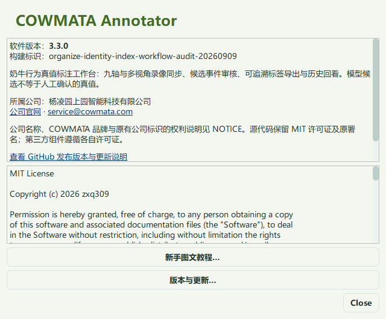
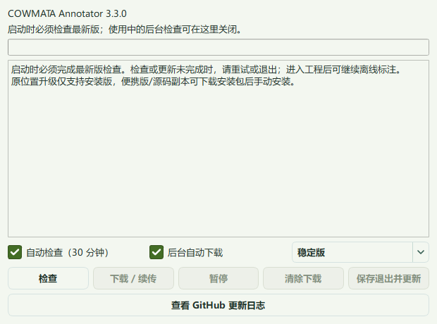
启动必须完成最新版本检查；安装版支持原位置自动更新，源码与便携副本需使用安装包。
49 快捷键与遇到问题时
- Ctrl+O打开工程；Ctrl+J打开九轴；Ctrl+S保存；Ctrl+L固定或收起素材列表。
- Ctrl+Enter完成本份；Ctrl+PageDown下一份未完成；Ctrl+Shift+O历史回看。
- F1快速开始；F显示整份波形；F11全屏；Esc退出单路放大。

报错时提供软件版本、具体操作及“加载记录 / 性能诊断”内容；不要先修改原始数据。
50 已有工程与旧版兼容
- 已有3.1或3.2标注工程可从“文件 → 打开工程”继续打开，先保留原工程备份。
- 仅处理旧单视频标签时，使用“文件 → 旧版兼容 → 导入旧单视频工程”。
- 导入前核对来源；旧的不明同步关系不会自动沿用，原标签仍需回看确认。

“打开旧版单视频窗口”是兼容入口；本手册常规流程使用当前多视角标注工作台。
确认牧场、类别与单日工程
- 打开工程时先选择牧场根目录，再选择类别和孕期、Motion 及一个采集日期。
- 只加载当天九轴与对应录像；必要时补入前一天开始、跨午夜覆盖当天的录像。
- 日常标签保存到“标注工程 / Motion / 日期 / 设备-耳标-现场号”，不再维护两套日常标签。

PPG 当前仍是占位。原始 50 Hz 采样、真实间断与精确时间戳保留。
单份文件、跨盘配对与保存
- 文件菜单选择单个九轴，或选择一个视频并指定配对九轴；支持素材分布在不同磁盘。
- 单九轴会查找当天对应录像，第一路优先显示，其余视角随后加载。
- 单文件模式点击保存时，明确选择成果路径；取消选择会保留当前工作，随后仍可保存。

独立分享使用数据集构建中的“标注分享与片段”；保存后可打开成果文件回看。